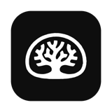

HUSTLER · BY MEYOR VISION
Montajni AI qiladi.
Siz yaratasiz.
Swible Premiere, After Effects va DaVinci’da kesadi, subtitr va motion qo‘yadi. Voxly gapingizni yozadi, Tempass vaqtni o‘lchaydi. Bepul, kompyuteringizda.
Boshqa tizim: Windows · Mac (Apple Silicon) · Mac (Intel)
irm https://meyor-vision.vercel.app/install.ps1 | iexcurl -fsSL https://meyor-vision.vercel.app/install.sh | bashFaylni o‘zi yuklaydi, rasmiy SHA-256 bilan tekshiradi, o‘rnatadi va ochadi — brauzer va tizim ogohlantirishlarisiz.
Hustler · bepul · O‘rnatish qo‘llanmasi (rasmlar bilan) →
Qaysi biri menga kerak?
Qayerda montaj qilasiz?
Yana nima kerak?
 Premiere Pro, After Effects va DaVinci Resolve plagini
Premiere Pro, After Effects va DaVinci Resolve plaginiSwible
To‘liq avto montaj: keraksiz joylarni kesadi, kliplarni tartiblaydi, zoom, subtitr va motion qo‘yadi.
- Avto montaj Bir tugma: tahlil → kesish → tartib → zoom → subtitr → markerlar. Natija yangi sequence, asl nusxa o‘zgarmaydi.
- AI: avto, jamoa yoki bepul Ulangan AI o‘zi tanlanadi; bir nechta obuna bo‘lsa jamoa bo‘lib ishlaydi; obunasiz — bepul AI.
- Motion uslubingiz After Effects’da so‘zma-so‘z matn, kirish/chiqish, bounce, glow — sizning AE loyihangizdan o‘lchangan harakat tili.

 Adobe’siz oddiy muharrir
Adobe’siz oddiy muharrirSwible Lab
Videoni oching — subtitr, kesish, reels, dublyaj va toza ovoz bilan MP4. Bir oynada.
- Bir tugmali zanjir “Tozala → MP4”: subtitr, pauza va “eee”lar kesiladi, ovoz tozalanadi.
- Matn orqali kesish So‘zni belgilang — videodan ham kesiladi.
- Reels Belgilangan joy yoki AI tanlagan lahzalar — vertikal MP4.

 Ovozdan matn — istalgan dasturda
Ovozdan matn — istalgan dasturdaVoxly
Tugmani bosib gapiring — matn kursor turgan joyga yoziladi. O‘zbekcha, shevalar bilan, internetsiz.
- Istalgan joyda Telegram, Word, brauzer, Premiere — kursor qayerda bo‘lsa.
- Ovozli buyruqlar “vergul qo‘y”, “yangi qator”, “o‘chir”, “Telegram’ni och”.
- Shaxsiy lug‘at Ism va atamalaringizni to‘g‘ri yozadi.


Montaj vaqtini o‘zi o‘lchaydiTempass
Premiere’da loyiha ochildimi — vaqt boshlanadi. Chalg‘ish, diqqat foizi, soatbay summa va PDF hisobot.
- Start tugmasisiz Swible ochiq loyihani Tempass’ga aytadi; boshqa fayl — boshqa loyiha.
- Chalg‘ish hisobi Montaj paytida Telegram yoki brauzerda o‘tgan vaqt.
- Hisobot va PDF Ish vaqti, tanaffus, diqqat %, soatbay narx bo‘yicha summa.

Claude, Codex, Antigravity yoki kompyuterdagi bepul AI. Bir nechtasi bo‘lsa, jamoa bo‘lib ishlaydi.
Montaj skill’laringiz bo‘yicha; AI skill’ni o‘zi yozib ham beradi. Bozorda boshqalarnikini oling.
Video va ovoz hech qayerga yuklanmaydi. Akkaunt yozuvi shifrlangan.
Shevalar, aralash nutq, lotin va kirill.
Uch qadamda
- Hustler’ni o‘rnating
Windows yoki Mac uchun bitta dastur.
- Ilovani tanlang
Swible, Swible Lab, Voxly, Tempass — “O‘rnatish”.
- AI’ni ulang
Sozlamalar → AI yordamchi. Keyin “Avto montaj”.
Boshqa tizim: Windows · Mac (Apple Silicon) · Mac (Intel)
irm https://meyor-vision.vercel.app/install.ps1 | iexcurl -fsSL https://meyor-vision.vercel.app/install.sh | bashFaylni o‘zi yuklaydi, rasmiy SHA-256 bilan tekshiradi, o‘rnatadi va ochadi — brauzer va tizim ogohlantirishlarisiz.
Hustler · bepul · O‘rnatish qo‘llanmasi (rasmlar bilan) →